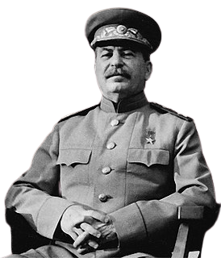

Бітвы
Найважнейшыя бітвы і аперацыі ў гісторыі Вялікай Айчыннай Вайны! Розныя гісторыі ў розных гарадах!
АБАРОНА БРЕСЦКАЙ КРЭПАСЦІ
Штурм крэпасці, гарады Брэста і захоп мастоў праз Заходні Буг і Мухавец быў даручаны 45-й пяхотнай дывізіі (45-я пд)
вермахта генерал-маёра Фрыца Шліпера (каля 15 тысяч чалавек) з часткамі ўзмацнення. Для вядзення артпадрыхтоўкі на
працягу першых пяці хвілін дывізіі надаваліся мартырныя дывізіёны 31-й і 34-й пяхотных дывізій 12-га армейскага корпуса
4-й арміі.
ВЫЗВАЛЕННЕ МІНСКА
Мінская аперацыя пачалася 29 чэрвеня, калі войскі 3-га Беларускага і 1-га Беларускіх франтоў у збежным напрамку нанеслі
ўдар па праціўніку. Далей сумесна з войскамі 2-га Беларускага фронту было завершана акружэнне Мінска. Важкую дапамогу
войскам аказалі беларускія партызаны, якія ладзілі засады на шляхах адступлення нямецкіх сіл, грамілі штабы, знішчалі
масты і пераправы.
ХАТЫНЬ
Хатынь (магчыма, ад бел. хата - дом) - вёска ў Беларусі, знішчаная 22 сакавіка 1943 года карным атрадам у якасці помсты
за забойства некалькіх нямецкіх вайскоўцаў. У адпаведнасці з прынцыпам калектыўнага пакарання 149 жыхароў Хатыні былі
спалены жыўцом або расстраляны нямецкім войскам і дапаможным паліцэйскім батальёнам за магчымае аказанне жыхарамі вёскі
дапамогі партызанам. У карнай аперацыі ўдзельнічалі 118-ы батальён шуцманшафта і асаблівы батальён СС «Дзірлевангер».
БІТВА ЗА МАСКВУ
Бітва за Маскву (30 верасня 1941 года - 20 красавіка 1942 года) - баявыя дзеянні савецкіх і нямецкіх войскаў на
маскоўскім напрамку. Падзяляецца на 2 перыяды: абарончы (30 верасня - 4 снежня 1941 года) і наступальны, які складаецца
з двух этапаў: контрнаступлення (5 снежня 1941 года - 7 студзеня 1942 года) і наступлення савецкіх войскаў (7 студзеня -
30 сакавіка 1942 года). У заходняй гістарыяграфіі бітва вядомая як "Аперацыя Тайфун".
АПЕРАЦЫЯ «БАГРАЦІЁН»
Беларуская наступальная аперацыя "Баграціён" - стратэгічная наступальная аперацыя Вялікай Айчыннай вайны, якая
праводзілася 23 чэрвеня - 29 жніўня 1944 года. Названа ў гонар палкаводца, які атрымаў вядомасць у ходзе Айчыннай вайны
1812 года, П. І. Баграціёна. У ходзе аперацыі савецкая армія нанесла найбуйнейшую паразу нямецкай арміі за ўсю ваенную
гісторыю Германіі, разграміўшы групу армій «Цэнтр» Вермахта. Адна з найбуйнейшых ваенных аперацый за ўсю гісторыю
чалавецтва.
АПЕРАЦЫЯ «ІСКРА»
Аперацыя «Іскра» (ням.: Zweite Ladoga-Schlacht — Другая бітва ля Ладажскага возера) — наступальная аперацыя
савецкіх войскаў падчас Вялікай Айчыннай вайны, праведзеная з 12 па 30 студзеня 1943 года сіламі Ленінградскага і
Волхаўскага франтоў пры садзейнічанні часткі сіл Балтыі ваеннай флатыліі і авіяцыі далёкага дзеяння з мэтай прарыву блакады Ленінграда.
КУРСКАЯ БІТВА
Курская бітва (5 ліпеня - 23 жніўня 1943 года; таксама вядомая як Бітва на Курскай дузе) - сукупнасць стратэгічных
абарончай (5-23 ліпеня) і наступальных (12 ліпеня - 23 жніўня) аперацый Чырвонай арміі ў Вялікай Айчыннай вайне з мэтай
сарваць буйны наступ сіл вермахта і разграміць яго стратэгічную групоўку. У гістарыяграфіі лічыцца самай буйной
(найвялікшай) танкавай бітвай у гісторыі. У ім удзельнічалі каля 2 млн чалавек, 6000 танкаў, 4 тысячы самалётаў; бітва
праклала «шлях да вялікіх савецкіх наступальных дзеянняў 1944-45 гадоў».
СТАЛІНГРАДСКАЯ БІТВА
Сталінградская бітва — адна з найважнейшых і найбуйнейшых генеральных бітваў Другой сусветнай і Вялікай Айчыннай войн
паміж Чырвонай арміяй і вермахтам пры падтрымцы армій краін «восі», якая скончылася перамогай Узброеных сіл СССР. Бітва
адбывалася з 17 ліпеня 1942 года па 2 лютага 1943 года на тэрыторыі сучасных Варонежскай, Растоўскай, Валгаградскай
абласцей і Рэспублікі Калмыкіі.
РЖЕЎСКАЯ БІТВА
Ржэўская бітва - баявыя дзеянні савецкіх і нямецкіх войскаў падчас Вялікай Айчыннай вайны, якія праходзілі ў раёне
Ржэўска-Вяземскага выступу з 5 студзеня 1942 года па 21 сакавіка 1943 года з перапынкамі ад паўтара да трох месяцаў.
Завяршылася адступленнем 9-й арміі вермахта 5 сакавіка 1943 года з Ржэўска-Вяземскага выступу.
ГОМЕЛЬСКА-РЭЧЫЦКАЯ АПЕРАЦЫЯ
Гомельска-Рэчыцкая аперацыя - наступальная аперацыя войскаў Беларускага фронту падчас Вялікай Айчыннай вайны,
праведзеная 10 лістапада - 30 лістапада 1943 года. У выніку аперацыі савецкія войскі прарвалі абарону суперніка ў паласе
шырынёй 100 кіламетраў, прасунуліся ўглыб на 130 кіламетраў. Раніцай 26 лістапада 1943 года пасля разлютаваных начных
баёў быў вызвалены горад Гомель.

Прайдзіце тэст "Бітвы", каб праверыць свае веды!
Даведайцеся шмат новага пры праходжанні тэста!